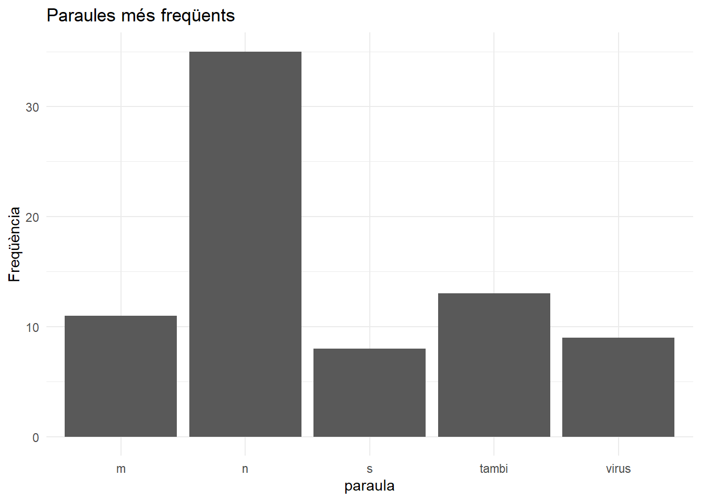
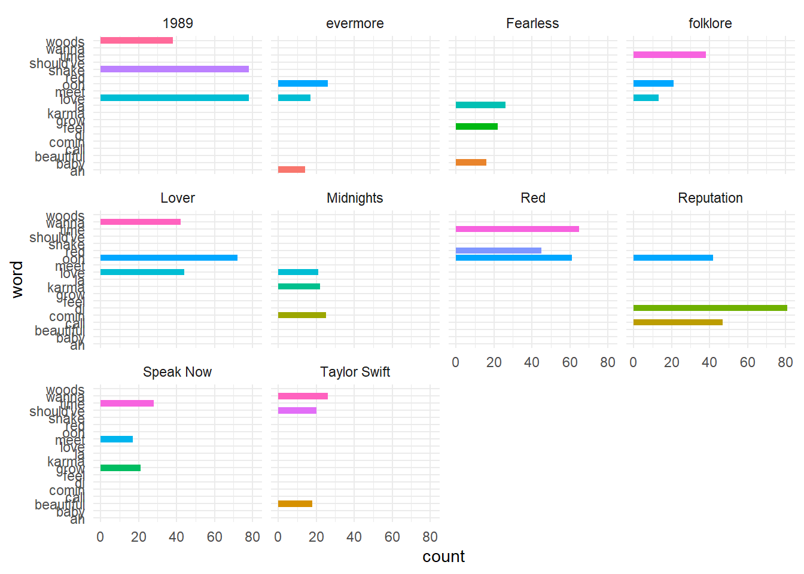
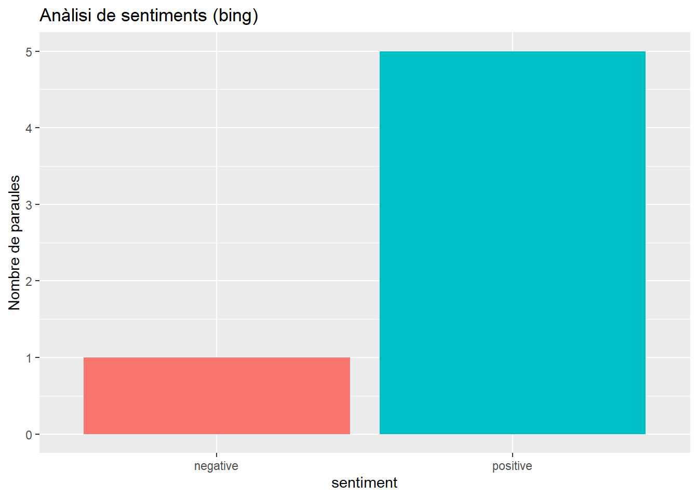
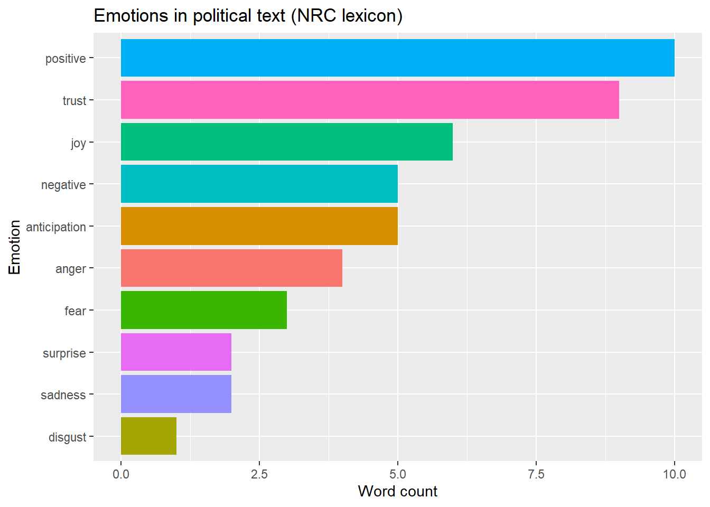
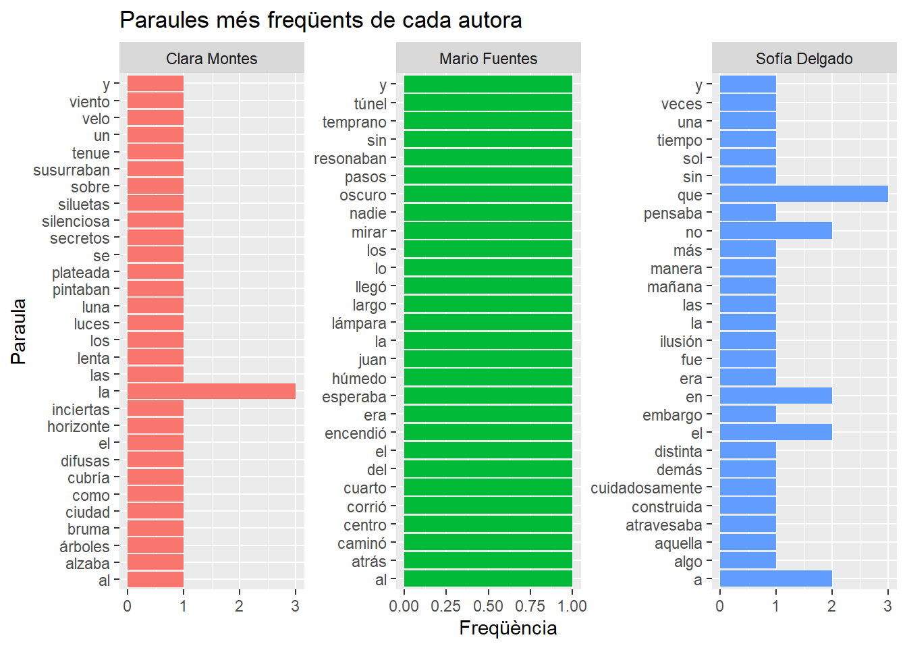

library("tidyverse")
library("tidytext")9. Anàlisi textual
1 Introducció
En aquest apartat explicarem com analitzar informació en format textual. En sessions prèvies, hem treballat amb tidyverse, un conjunt de paquets en R pensats per manipular, transformar i visualitzar dades. En aquest apartat, combinarem el seu ús amb tidytext, un paquet que permet fer anàlisi de textos utilitzant eines com la tokenització o d’eliminació de paraules buides (stopwords). La tokenització és la divisió d’un text en unitats bàsiques anomenades tokens. Aquests tokens poden ser paraules, frases, síl·labes o fins i tot caràcters, segons l’anàlisi que es vulgui fer.
2 Anàlisi de la declaració de l’estat d’alarma pel COVID-19
Comencarem amb una anàlisi del “Real Decreto 463/2020, de 14 de marzo, por el que se declara el estado de alarma para la gestión de la situación de crisis sanitaria ocasionada por el COVID-19”. Trobareu el text de la declaració en format en format .txt al Campus Virtual.
En el cas de textos en català o castellà que incorporen accents i caràcters com la “ç” o o la “ñ”, és important indicar la codificació per garantir que s’importen correctament. En primer lloc, esbrinem la codificació del fitxer amb el paquet readr i la funció guess_encoding().
library(readr)
guess_encoding("data/declaracion.txt")Per carregar el text, farem servir la funció readLines que llegeix un fitxer de text línia a línia, tot indicant la codificació.
declaracio <- readLines("data/declaracion.txt", encoding = "ISO-8859-1")
declaracio [1] "Buenas tardes."
[2] "Estimados compatriotas."
[3] "En el d\xeda de hoy, acabo de comunicar al Jefe del Estado la celebraci\xf3n, ma\xf1ana, de un Consejo de Ministros extraordinario, para decretar el Estado de Alarma en todo nuestro pa\xeds, en toda Espa\xf1a, durante los pr\xf3ximos 15 d\xedas."
[4] "El Estado de Alarma es un instrumento de nuestro Estado de Derecho, recogido por nuestra Constituci\xf3n, para enfrentar crisis tan extraordinarias como la que desgraciadamente est\xe1 sufriendo el mundo y tambi\xe9n nuestro pa\xeds."
[5] "La emergencia sanitaria y social generada por el coronavirus conocido como COVID 19, crea circunstancias extraordinarias como las que la Ley contempla para dotar al Gobierno de Espa\xf1a de recursos legales, tambi\xe9n, extraordinarios."
[6] "En la reuni\xf3n prevista para ma\xf1ana, el Consejo de Ministros extraordinario adaptar\xe1 un conjunto de decisiones excepcionales al amparo de la declaraci\xf3n del Estado de Alarma que se va a decretar ma\xf1ana."
[7] "Estas decisiones estar\xe1n orientadas a movilizar todos los recursos del conjunto del Estado para proteger, mejor, la salud de todos los ciudadanos. Recursos econ\xf3micos, recursos sanitarios, tanto p\xfablicos como privados, tanto civiles como tambi\xe9n militares, para la protecci\xf3n de todos los ciudadanos, en particular de los que resulten m\xe1s vulnerables frente al virus por su edad o por otros padecimientos previos. Y tambi\xe9n para responder a la emergencia social y econ\xf3mica con la m\xe1xima agilidad y contundencia."
[8] "Queremos la m\xe1xima coordinaci\xf3n de recursos, eficiente y garantizada del conjunto de las administraciones p\xfablicas y su mejor funcionamiento. El Gobierno de Espa\xf1a va a proteger a todos los ciudadanos y va a garantizar las condiciones de vida adecuadas para frenar la pandemia con la menor afectaci\xf3n posible."
[9] "Naturalmente, me dispongo a dar cuenta de inmediato al Congreso de los Diputados, ya he informado a la presidenta del Congreso, he trasladado, tambi\xe9n, a las principales fuerzas pol\xedticas esta decisi\xf3n. Otro tanto voy a hacer con los presidentes auton\xf3micos con quienes mantendr\xe9 una conversaci\xf3n telef\xf3nica esta misma tarde. A todos ellos y a todas ellas quiero trasladarles por anticipado mi reconocimiento por el trabajo que vienen haciendo, cada uno desde sus instituciones y sus responsabilidades. Tambi\xe9n mi gratitud por su comprensi\xf3n ante estas decisiones que se dirigen a combatir una emergencia que amenaza la salud y el bienestar de todos, y que no atiende ni a fronteras ni internas ni externas."
[10] "Estamos solo en la primera fase de un combate contra el virus que libran todos los pa\xedses del mundo y en particular nuestro continente, Europa. Nos esperan, como dije al principio de la semana, semanas muy duras. Dijimos que vendr\xedan d\xedas dif\xedciles y tomamos medidas a la altura de esa dificultad. Y no cabe descartar que en la pr\xf3xima semana alcancemos, desgraciadamente, los m\xe1s de 10 mil afectados."
[11] "Todo el esfuerzo de las autoridades sanitarias tanto internacionales, como nacionales y auton\xf3micas est\xe1 dirigido a evitar una propagaci\xf3n demasiado r\xe1pida del virus, para poder as\xed auxiliar a los pacientes que por su edad o por dolencias previas sean m\xe1s vulnerables y precisen la necesaria atenci\xf3n hospitalaria."
[12] "Todos tenemos una tarea y una misi\xf3n en los pr\xf3ximos d\xedas, en las pr\xf3ximas semanas y no es menor. La primera l\xednea la forman los profesionales de la salud. Nuestro escudo frente al virus. Ellos con su entrega, con su sacrificio nos protegen a todos y merecen el reconocimiento y la gratitud de todos."
[13] "La misi\xf3n de las autoridades sanitarias nacionales y auton\xf3micas es, tambi\xe9n, clara; proporcionar a los profesionales los medios para desarrollar su labor y mantener y reforzar la extraordinaria coordinaci\xf3n que han desarrollado en estas \xfaltimas semanas."
[14] "Quiero, tambi\xe9n, trasladar un mensaje muy especial a nuestros mayores y a las personas con enfermedades cr\xf3nicas que, l\xf3gicamente, debilitan sus defensa; deben protegerse al m\xe1ximo frente a la infecci\xf3n. Evitar a toda costa los contactos y la exposici\xf3n en espacios p\xfablicos."
[15] "Tambi\xe9n me gustar\xeda dirigirme a los j\xf3venes, quienes tienen, tambi\xe9n, una misi\xf3n decisiva. Es cierto que por su vitalidad pueden sentirse al abrigo de los efectos m\xe1s severos del virus, pero pueden actuar como transmisores a otras personas cercanas mucho m\xe1s vulnerables. Su colaboraci\xf3n, la colaboraci\xf3n de los j\xf3venes, es decisiva para cortar los contagios y por eso deben limitar los contactos y mantener la distancia social."
[16] "Y todas, y todos, tenemos, por supuesto, un deber personal; seguir a rajatabla las indicaciones de los expertos y colaborar unidos para vencer al virus con la m\xe1xima responsabilidad y absoluta disciplina social."
[17] "Lo he venido diciendo a lo largo de esta semana; haremos desde el Gobierno de Espa\xf1a lo que haga falta, cuando falta y donde haga falta."
[18] "La declaraci\xf3n del Estado de Alarma permite movilizar, al m\xe1ximo, los recursos materiales para combatir el virus. Pero, tambi\xe9n me vais a permitir que haya un recurso fundamental, que est\xe1 m\xe1s all\xe1 de cualquier ley o decreto y al que me gustar\xeda apelar directamente a los compatriotas. La victoria depende de cada uno de nosotros, en nuestro hogar, en nuestra familia, en el trabajo, en nuestro vecindario. El hero\xedsmo consiste, tambi\xe9n, en lavarse las manos, en quedarse en casa y en protegerse uno mismo, para proteger al conjunto de la ciudadan\xeda."
[19] "Tardaremos semanas, va a ser muy duro y dif\xedcil, pero vamos a parar al virus. Eso es seguro. Con unidad, responsabilidad y disciplina social. Superaremos esta emergencia ampar\xe1ndonos en el consejo de la ciencia y apoy\xe1ndonos en todos los recursos del Estado. Pero tambi\xe9n es seguro que lo conseguiremos antes y con los menores da\xf1os humanos, econ\xf3micos y sociales posibles si lo hacemos unidos y cumpliendo cada cual con nuestro deber. Este virus lo pararemos unidos. Muchas gracias. Buenas tardes." 2.1 Càlcul de la freqüència dels termes
Estructurarem la informació en un tibble, una estructura de dades tabular (files i columnes) similar a un dataframe, però amb algunes característiques millorades, introduïda pel paquet tidyverse. En el nostre cas, el tibble tindrà dues columnes: una amb el número del paràgraf i una altra amb el text.
discurs <- tibble(num_par = seq_along(declaracio),
text = declaracio)
discursEl següent pas consisteix a separar individualment les paraules. Amb aquesta finalitat, farem servir la funció unnest_tokens del paquet tidytext. Per defecte, interpreta que les tokens en què volem divir el text són paraules, però també podriem dividir el text en frases, com veurem a continuació. Totes les paraules quedaran en minúscules, la qual cosa facilitarà l’anàlisi.
paraules <- discurs %>%
tidytext::unnest_tokens(paraula, text)Com hem comentat, també podriem dividir el text en frases (o en caràcters):
frases <- discurs %>%
tidytext::unnest_tokens(frase, text, token = "sentences")
L’anàlisi més simple consisteix a fer un recompte de la freqüència de les paraules que apareixen en el text. Per defecte, les paraules s’ordenen alfabèticament, de manera que afegim el paràmetre sort que permet indicar que volem una ordenació per freqüència.
paraules %>%
count(paraula, sort = TRUE)Podem observar que les paraules més freqüents són paraules buides (articles, conjuncions, preposicons, etc.) sense valor semàntic. Per tant, abans de proseguir, el millor serà eliminar aquestes paraules buides. El paquet tidytext porta carregats diversos diccionaris de paraules buides en diferents idiomes, inclòs el castellà però no el català. En aquest cas, carreguem el conjunt de paraules buides en castellà en un objecte que anomenem vacias.
vacias <- tidytext::get_stopwords("es")Podeu observar que hi ha 308 paraules buides. L’encapçalament de la columna en el tibble és word. El canviem per paraula que és el nom del camp en el tibble amb el discurs. D’aquesta manera podrem creuar fàcilment els dos tibbles per eliminar les paraules buides.
vacias <- vacias %>%
rename(paraula = word)
str(vacias)tibble [308 × 2] (S3: tbl_df/tbl/data.frame)
$ paraula: chr [1:308] "de" "la" "que" "el" ...
$ lexicon: chr [1:308] "snowball" "snowball" "snowball" "snowball" ...Ara ja podem eliminar les paraules buides. Fem servir la funció anti_join() que serveix per quedar-se amb les files d’una taula que no tenen correspondència en una altra.
paraules2 <- paraules %>%
anti_join(vacias)Joining with `by = join_by(paraula)`I fem un recompte de les paraules.
freq.paraules <- paraules2 %>%
count(paraula, sort = TRUE)2.2 Representació gràfica de les paraules més freqüents
Farem una gràfica de les 5 paraules més freqüents.
frequents <- freq.paraules %>%
top_n(5, n)
ggplot(frequents, aes(x = paraula, y = n)) +
geom_col() +
labs(title = "Paraules més freqüents",
y = "Freqüència") +
theme_minimal()
Una altra opció, més atractiva, consisteix a representar totes les paraules de la declaració en un núvol.
library(wordcloud2)
wordcloud2(freq.paraules)3 Anàlisi de les lletres de les cançons de Taylor Swift
En primer lloc, carreguem les lletres de les cançons. Les teniu disponibles al Campus Virtual. Veureu que el fitxer conté quatre camps amb: un número correlatiu, que ens permetrà referir-nos fàcilment a qualsevol cançó; el títol de l’àlbum; el títol de la cançó; i la lletra.
TS_lyrics <- readxl::read_excel("data/TS_data.xlsx")Igual que a l’exemple anterior, procedim a separar les lletres de les cançons en paraules. Visualitzem les 20 primeres paraules per observar l’estructura del dataset.
lletresTS_brut <- TS_lyrics %>%
unnest_tokens(word, Lyrics)
head(lletresTS_brut, 20)A continuació, procedim a eliminar les paraules buides. Fem servir la llista de paraules buides en anglès que conté tidytext. Com que al fitxer de lletres ja estan en una columna que es diu “word”, podem eliminar-les directament.
lletresTS <- lletresTS_brut %>%
anti_join(stop_words)Joining with `by = join_by(word)`De què parlen les lletres de Taylor Swift? Es a dir, quines són les paraules més freqüents?
top <- lletresTS %>%
count(word, sort = T)
topHo visualitzem en format de núvol de paraules.
wordcloud2(top)Pot ser interessant analitzar si els termes més freqüents són els mateixos a tots els discos o si les paraules més freqüents han canviat amb el pas del temps.
lletresTS %>%
group_by(Album) %>%
count(word, sort = TRUE) %>%
slice(1,2,3) %>%
ggplot() +
geom_bar(aes(x = word, weight = n, fill = word)) +
coord_flip() +
facet_wrap(~Album) +
theme_minimal() +
theme(legend.position = "none")
4 Anàlisi de sentiments
L’anàlisi de sentiments consisteix a classificar paraules o textos segons la seva polaritat emocional:
Positiva / Negativa
Alegria, tristesa, por, ira, etc. (emocions específiques)
Aquestes classificacions es basen en diccionaris predefinits anomenats lexicons. Amb el paquet tidytext, podem carregar diversos lexicons, però tots estan en anglès:
bing: Positiu / Negatiu. Exemple: “happy” → positiuafinn: escala de -5 a +5. Exemple: “hate” → -3nrc: emocions (alegria, por, tristesa…). Exemple: “fear”, “joy”
Imaginem que tenim una pizzeria i volem analitzar les ressenyes que alguns clients han escrit sobre el nostre negoci. Carregarem algunes frases que ens serviran d’exemple.
ressenyes <- tibble(ressenya = 1:5,
text = c("The pizza was absolutely delicious and the crust was perfect.",
"Terrible service. We waited 40 minutes for our order.",
"The staff was friendly and made us feel welcome.",
"The sauce was too salty and the dough was undercooked.",
"Great experience! We'll definitely come back again."))El primer pas, consistirà a individualitzar les paraules.
paraules <- ressenyes %>%
unnest_tokens(word, text)A continuació, creuem les paraules presents a les ressenyes amb el lexicon bing.
sentiments <- paraules %>%
inner_join(get_sentiments("bing"))Joining with `by = join_by(word)`Fem un resum del tipus de sentiment present a les ressenyes de la nostra pizzeria.
resum_sentiments <- sentiments %>%
count(sentiment)
ggplot(resum_sentiments, aes(x = sentiment, y = n, fill = sentiment)) +
geom_col(show.legend = FALSE) +
labs(title = "Anàlisi de sentiments (bing)", y = "Nombre de paraules")
Farem un segon exemple d’anàlisi de les emocions en un text polític fent servir el paquet NRC. La descàrrega d’aquest paquet és una mica pesada. No cal que el descarregueu, simplement podeu veure l’exemple a continuació.
text.politic <- tibble(linia = 1, text = "Our nation stands at a crossroads. Citizens demand justice, transparency, and strong leadership. While fear and uncertainty grow, we must choose unity over division. Together, we can build a future rooted in hope and equality. We reject corruption and violence, and embrace progress, dialogue, and peace.")Com és habitual, comencem amb l’extracció de les paraules.
tokens <- text.politic %>%
unnest_tokens(word, text)A continuació, creuem aquestes paraules amb les del lexicon NRC.
library(textdata)
nrc_sentiments <- get_sentiments("nrc")
sentiments <- tokens %>%
inner_join(nrc_sentiments, by = "word")Resumim i visualitzem les conclusions.
sentiments_summary <- sentiments %>%
count(sentiment, sort = TRUE)
ggplot(sentiments_summary, aes(x = reorder(sentiment, n), y = n, fill = sentiment)) +
geom_col(show.legend = FALSE) +
coord_flip() +
labs(title = "Emotions in political text (NRC lexicon)",
x = "Emotion",
y = "Word count")
5 Estilometria
L’estilometria és l’estudi quantitatiu de l’estil d’escriptura, generalment amb l’objectiu d’atribuir l’autoria d’un text o d’analitzar característiques estilístiques d’un autor, període o gènere. Utilitza mètodes estadístics i computacionals per analitzar elements lingüístics com ara la freqüència de paraules (sobretot les paraules funcionals com “i”, “de”, “que”, etc.), la longitud de les frases, l’ús de signes de puntuació i patrons gramaticals o lèxics.
Veurem un exemple bàsic d’anàlisi estilomètrica. No obstant, hi ha paquets específics per aquest tipus d’anàlis com stylo.
Carreguem 6 textos, de diferents estils, corresponents a 3 suposats autors.
textos <- tibble(
autor = rep(c("Clara Montes", "Mario Fuentes", "Sofía Delgado"), each = 2),
texto_id = paste0("texto", 1:6),
texto = c(
# Clara Montes
"La luna se alzaba lenta sobre el horizonte, plateada y silenciosa. Los árboles susurraban secretos al viento...",
"La bruma cubría la ciudad como un velo tenue. Las luces difusas pintaban siluetas inciertas...",
# Mario Fuentes
"Juan llegó temprano. Nadie lo esperaba. Caminó al centro del cuarto y encendió la lámpara...",
"Corrió sin mirar atrás. Los pasos resonaban. El túnel era largo. Oscuro. Húmedo...",
# Sofía Delgado
"A veces pensaba que el tiempo no era más que una ilusión cuidadosamente construida...",
"Aquella mañana no fue distinta a las demás, y sin embargo algo en la manera en que el sol atravesaba..."
)
)Extreiem les paraules i comptabilitzem les que utilitza més freqüentment cada autora.
tokens <- textos %>%
unnest_tokens(paraula, texto) %>%
count(autor, paraula, sort = TRUE)
tokensHo representem gràficament.
ggplot(tokens, aes(x = paraula, y = n, fill = autor)) +
geom_col(show.legend = FALSE) +
facet_wrap(~autor, scales = "free") +
coord_flip() +
labs(title = "Paraules més freqüents de cada autora", y = "Freqüència", x = "Paraula")
Per acabar, compararem la longitud de les frases de cada autora, tant el nombre de paraules per frase com el nombre de caràcteres per frase. Comencem separant els textos en frases.
frases <- textos %>%
unnest_tokens(frase, texto, token = "sentences")Calculem la longitud de les frases.
frases <- frases %>%
mutate(
n_paraules = str_count(frase, "\\S+"), # Compta paraules per espais
n_caracteres = nchar(frase)) # Compta caràctersfrases %>%
group_by(autor) %>%
summarise(
mitjana_paraules = mean(n_paraules),
mitjana_caracteres = mean(n_caracteres))6 Exercicis
6.1 Anàlisi d’un text de Mario Benedetti
En el Campus Virtual encontrarás el texto del cuento Pacto de sangre del escritor uruguayo Mario Benedetti. Identifica los términos más frecuentes en el texto y reprodúcelos en una nube de palabras.
6.2 Anàlisi de sentiments
Localitza a Google Maps 10 ressenyes de negocis. Poden ser del mateix botiga o diferents negocis. Intenta combinar ressenyes positives i negatives. Aplica una anàlisi de sentiments.